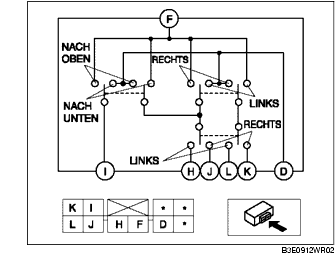
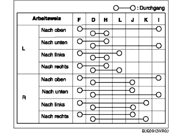

SCHALTER DES ELEKTRISCHEN AUSSENSPIEGELS PRÜFEN
B3E091266600W02
1. Mit einem Ohmmeter prüfen, ob zwischen den Klemmen des Außenspiegelschalters Durchgang besteht.

• Falls nicht wie vorgeschrieben, den Außenspiegelschalter austauschen.
